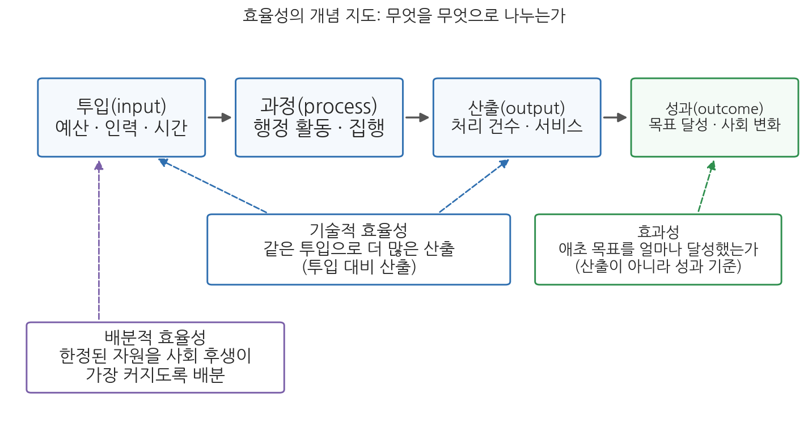
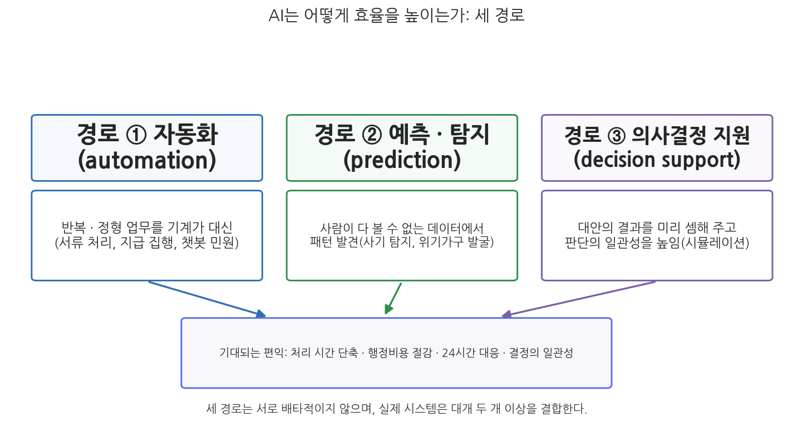

2주차 1차시. AI와 효율성 (1): 효율의 약속
행정 연구의 목적은 첫째, 정부가 무엇을 제대로 그리고 성공적으로 할 수 있는지를 발견하는 것이고, 둘째, 그 일들을 돈이든 에너지든 가능한 한 최소의 비용으로, 가능한 한 최대의 효율로 어떻게 해낼 수 있는지를 발견하는 것이다. (우드로 윌슨, 「행정학 연구」, 1887)
이 장에서 배우는 것
2025년 5월, 종합소득세 신고 기간의 국세청 상담 전화를 떠올려 보자. 해마다 이맘때면 전국의 납세자가 한꺼번에 전화를 걸어 상담원 연결은 하늘의 별 따기였다. 그런데 이해에는 풍경이 달랐다. 국세청이 홈택스를 "AI 홈택스"로 개편하고 상담 서비스에 AI(인공지능) 음성 상담을 도입한 첫해였기 때문이다. 국세청 발표에 따르면 신고 기간 전체 상담의 약 75%를 AI 상담이 처리했고, 통화 연결 성공률은 전년의 24%에서 98%로 뛰었다. 국세청은 이를 "상담사 1,000명을 새로 채용한 효과"라고 설명했다. 사람을 늘리지 않고 산출을 늘린 것, 행정학의 언어로 말하면 전형적인 효율성(efficiency)의 개선이다.
이 장면은 정부가 AI를 도입할 때 내세우는 가장 오래되고 가장 강력한 약속을 압축해서 보여 준다. 더 빠르게, 더 싸게, 더 많이. 1주차에서 우리는 이 교재가 AI와 행정의 만남을 공공가치의 렌즈로 본다고 예고했다. 그 첫 번째 렌즈가 효율성인 이유는 분명하다. 효율성이야말로 각국 정부가 AI를 도입하는 제1의 동인(driver)이고, 도입을 정당화하는 제1의 언어이기 때문이다. 이번 차시는 그 약속을 액면 그대로 정확하게 이해하는 시간이다. 약속을 재검토하는 일은 다음 차시(2주차 2차시)의 몫이다. 구체적으로 다음을 배운다.
- 행정가치로서 효율성의 개념과 계보: 윌슨의 "최소 비용"에서 신공공관리까지
- 기술적 효율성과 배분적 효율성의 구분, 그리고 효율성과 효과성의 차이
- 행정가치의 지도(후드, 배니스터와 코널리) 안에서 효율성이 차지하는 자리
- AI가 효율을 높이는 세 경로: 자동화, 예측·탐지, 의사결정 지원
- 국내외 도입 사례를 통해 약속이 실현되는 조건 읽기
이 장은 하나의 질문을 따라 전개된다. "정부는 왜 AI에서 효율을 기대하며, 그 기대는 어떤 논리와 사례로 뒷받침되는가?"
1.1 행정가치로서 효율성의 개념과 계보를 정리한다 → 1.2 AI가 효율을 높이는 세 경로(자동화 · 예측 · 의사결정 지원)의 논리를 뜯어본다 → 1.3 미국 · 싱가포르 · 한국의 실제 사례를 읽는다 → 1.4 사례들이 공통으로 전제하는 조건을 확인하고, 다음 차시의 질문을 예고한다.
1.1 행정가치로서 효율성
오래된 가치: 윌슨에서 신공공관리까지
효율성은 AI 시대에 새로 등장한 가치가 아니다. 오히려 행정학이라는 학문의 출생 신고서에 적혀 있는 가치다. 이 장 첫머리에 인용한 1887년 윌슨(Woodrow Wilson)의 문장이 보여 주듯, 행정학은 처음부터 "정부가 하기로 한 일을 가능한 한 최대의 효율로, 최소의 비용으로" 해내는 방법을 찾는 학문으로 출발했다. 20세기 초 과학적 관리(scientific management)의 시대에 능률은 행정의 최고 가치로 떠받들어졌고, 시간과 동작을 재고 표준을 정하는 기법이 정부로 흘러들었다.
효율성이 다시 무대 중앙에 선 것은 1980년대다. 재정 위기와 정부 불신 속에서 등장한 신공공관리(New Public Management, NPM)는 민간 부문의 관리 기법을 정부에 이식해 공공서비스의 효율성과 성과 지향을 높이자는 흐름이었다(Hood, 1991). 오스본과 게블러(Osborne & Gaebler, 1992)의 『정부 재창조』가 그 교과서 격이었고, 성과관리(performance management), 민영화(privatization), 성과급제(performance-based pay) 같은 제도가 이 시기에 각국으로 퍼졌다. 뒤에서 보겠지만, 오늘날 정부의 AI 도입을 NPM 궤적의 연장으로 읽는 시각이 있는 것은 이 때문이다. "더 적은 투입으로 더 많은 산출"이라는 약속의 문법이 같기 때문이다.
효율성(efficiency)은 주어진 자원을 최적으로 사용하여 최대의 산출(output)을 달성하는 것을 뜻하며, 행정의 목표를 최소한의 비용으로 달성할 것을 강조하는 경제적 개념이다(Osborne & Gaebler, 1992; Boyne, 2003). 행정학에서는 흔히 두 종류를 구분한다(Moynihan & Pandey, 2005). 기술적 효율성(technical efficiency)은 동일한 투입(input)으로 최대한의 산출을 내거나 동일한 산출을 최소한의 투입으로 생산하는 것이고(Levine, 1978), 배분적 효율성(allocative efficiency)은 한정된 자원을 사회적 후생이 가장 커지도록 배분하는 것이다(Dunleavy, 1991). 이 장에서 "AI가 효율을 높인다"고 할 때의 효율은 대부분 앞의 것, 즉 기술적 효율성이다.
효율성과 효과성: 산출과 성과는 다르다
효율성과 자주 혼동되는 개념이 효과성(effectiveness)이다. 효율성이 투입 대비 산출의 비율이라면, 효과성은 애초에 세운 목표를 얼마나 달성했는가의 정도다. 그림 2-1이 두 개념의 자리를 보여 준다.

그림 2-1을 읽는 법은 이렇다. 위 줄은 행정 활동의 흐름(투입 → 과정 → 산출 → 성과)이고, 아래의 세 상자는 이 흐름의 어느 두 지점을 비교하는가에 따라 개념이 갈린다는 것을 보여 준다. 기술적 효율성은 투입과 산출을, 효과성은 목표와 성과를 비교하며, 배분적 효율성은 투입 그 자체(자원을 어디에 얼마나 넣을 것인가)를 묻는다. 이 그림에서 알 수 있는 것은 두 가지다. 첫째, 효율성과 효과성은 서로 다른 지점을 재기 때문에 얼마든지 어긋날 수 있다. 둘째, "AI로 효율이 올랐다"는 말은 대개 산출 지표의 개선을 뜻할 뿐, 성과의 개선까지 보증하지 않는다.
어긋남의 예를 보자. 공공의료에서 예산을 크게 절약했다면 효율성은 올라간 것이다. 그러나 그 절약이 필수 의료 서비스의 축소로 이어져 국민 건강이 나빠졌다면 효과성은 떨어진 것이다. 반대의 어긋남도 있다. 빈곤층 지원 예산을 대폭 늘려 빈곤율을 낮추는 데 성공했다면 효과성은 높지만, 그 과정에 낭비와 비효율적 절차가 많았다면 효율성은 낮다. 효율적이면서 비효과적일 수 있고, 효과적이면서 비효율적일 수 있다. 이 구분은 2차시에서 결정적으로 중요해진다. AI가 "행정비용은 줄였지만 의사결정의 질은 낮추는" 상황, 곧 효율은 얻고 효과는 잃는 상황이 실제로 관찰되기 때문이다.
행정가치의 지도 안에서: 효율성은 여러 가치 중 하나다
효율성이 중요하다는 것과 효율성이 전부라는 것은 다른 말이다. 행정학은 효율성을 언제나 다른 가치들과의 관계 속에서 다뤄 왔다. 후드(Hood, 1991)는 행정의 핵심 가치를 세 유형으로 나눴다. 시그마형은 자원을 아껴 목적에 맞게 쓰는 것(효율성·경제성)이고, 세타형은 정직하고 공정하게 일하는 것(청렴·공정성)이며, 람다형은 시스템을 안전하고 신뢰할 수 있게 유지하는 것(보안·신뢰성·회복력)이다. 후드는 세 가치군이 동시에 극대화되기 어렵고, 하나를 좇는 설계가 다른 하나를 약화시킬 수 있다고 보았다.
배니스터와 코널리(Bannister & Connolly, 2014)는 정보통신기술이 행정가치에 미치는 영향을 따지기 위해 가치를 의무 지향, 서비스 지향, 사회적 지향의 셋으로 다시 묶었다. 표 2-1이 그 요지다.
표 2-1. 행정가치의 세 지향 (Bannister & Connolly, 2014)
| 가치의 지향 | 내용 | 대표 가치 |
|---|---|---|
| 의무 지향 | 공무원이 정부에 지는 의무. 후드의 시그마형과 대체로 겹치되 비재정적 측면을 포함 | 책임성, 합법성, 성실성, 정직성, 효율성 |
| 서비스 지향 | 시민에게 높은 수준의 서비스를 제공할 책임. 민간의 고객 서비스에 상응 | 반응성, 효과성, 투명성 |
| 사회적 지향 | 개별 서비스를 넘어서는 폭넓은 사회적 목표 | 포용성, 공정성, 형평성, 개방성, 프라이버시, 중립성 |
이들의 결론은 기술이 어느 한 가치만 건드리지 않는다는 것이다. 기술 발전은 서비스 지향 가치에는 대체로 긍정적이지만, 사회적 지향 가치에는 부정적일 수 있고, 의무 지향 가치에는 양방향의 효과를 낳는다. AI도 마찬가지다. AI는 효율적이고 효과적인 서비스 제공을 돕는 동시에, 취약계층 지원을 통해 공정성에 영향을 미치기도 하고, 투명성과 신뢰성에는 복잡한 영향을 미친다. 요컨대 AI의 영향은 특정 가치군에 갇히지 않고 가치의 지도 전체에 걸쳐 있다.
그래서 행정학의 오랜 경고가 AI 시대에도 유효하다. 효율성의 극대화는 투명성이나 책임성과 충돌할 수 있고(Denhardt & Denhardt, 2000), 단순한 비용 절감을 위한 서비스 축소는 사회적 형평성과 정부 신뢰를 해칠 수 있다(Frederickson, 1990). 효율성은 중요한 행정가치지만, 민주성·형평성 등 다른 가치들과 균형을 이루는 방식으로 추구되어야 한다(Pollitt & Bouckaert, 2004). 이 교재가 3주차부터 투명성, 책임성, 형평성을 차례로 다루는 것은 이 균형의 문제를 하나씩 뜯어보기 위해서다.
1.2 AI는 어떻게 효율을 높이는가
믿음에서 출발한다
공공부문에서 AI 도입을 밀어붙이는 제1의 동인은, AI가 공공서비스 제공의 효율성과 효과성을 높여 줄 것이라는 믿음이다. 이 믿음에는 근거가 있다. AI 시스템은 데이터 분석과 일상적 작업을 자동화하여, 사람이 손으로 처리하는 절차보다 빠르고 비용 면에서 유리하게 일을 수행할 수 있다. 딜로이트 정부인사이트센터의 추정에 따르면 미국 연방정부 공무원 업무의 상당 부분이 문서 작성, 정보 입력과 검색 같은 정형 작업이며, 인지 기술로 이를 자동화하면 연간 수억 시간의 노동시간을 다른 일에 풀어 쓸 수 있다(Eggers, Schatsky & Viechnicki, 2017). 국제기구의 진단도 비슷하다. 유엔의 『전자정부 서베이 2024』는 AI를 별도의 부록으로 다루면서, AI가 정부 운영을 개선할 상당한 기회를 제공한다고 평가했다. 다만 같은 보고서는 위험의 관리와 거버넌스가 함께 가야 한다는 단서를 달았는데, 이 단서는 이 교재 전체의 복선이기도 하다.
믿음의 내용을 좀 더 정밀하게 나눠 보자. AI가 효율을 높인다고 할 때 실제로 작동하는 논리는 하나가 아니라 셋이다.

그림 2-2를 읽는 법은 이렇다. 위 줄의 세 상자가 AI가 효율에 이르는 서로 다른 경로이고, 각 상자 아래에 그 경로의 작동 방식과 대표 용례가 있으며, 세 경로가 모두 아래의 편익(시간 단축, 비용 절감, 24시간 대응, 일관성)으로 수렴한다. 이 그림에서 알 수 있는 것은, "AI 도입"이라는 한 단어 뒤에 성격이 꽤 다른 세 종류의 기술 활용이 숨어 있다는 점이다. 어느 경로인가에 따라 효율의 내용도, 뒤에서 볼 위험의 내용도 달라진다.
경로 ①: 자동화, 반복 업무를 기계에 맡기다
첫째 경로는 자동화(automation)다. 규칙이 명확하고 반복적인 정형 업무를 소프트웨어가 대신 수행하는 것으로, 로봇 프로세스 자동화(Robotic Process Automation, RPA)가 대표적이다. 신청서의 항목을 시스템에 옮겨 적는 일, 요건이 갖춰진 지급을 집행하는 일, 같은 질문에 같은 답을 되풀이하는 민원 응대가 여기에 속한다. AI 기반 챗봇과 가상 비서는 일반적인 문의를 24시간 처리하여 시민의 대기시간을 줄이고 공무원의 민원 부담을 던다. 이 경로의 효율 논리는 단순하고 강력하다. 사람의 손이 가던 시간을 통째로 절약하고, 근무시간의 제약을 없애며, 처리 단가를 낮춘다.
각국 정부가 AI 도입의 우선순위를 자동화에 두는 경향이 있는 것도 이 때문이다. 유럽연합 회원국 정부의 AI 활용을 전수 조사한 연구를 보면, 실제 도입된 시스템의 다수는 화려한 예측 모형이 아니라 민원 응대 챗봇과 업무 자동화처럼 수수한 것들이었다(van Noordt & Misuraca, 2022).
세 경로 중 자동화는 기술적으로 가장 덜 화려하다. 그런데도 정부 도입의 첫 순서가 되는 데는 이유가 있다. 첫째, 검증이 쉽다. 규칙 기반 자동화는 무엇을 왜 했는지 추적할 수 있어, 법령에 따라 움직여야 하는 행정과 궁합이 맞는다. 둘째, 실패의 위험이 작다. 서식 이송이나 단순 문의 응대는 틀려도 바로잡기 쉽지만, 수급 자격 판정 같은 결정은 틀리면 시민의 삶을 흔든다. 셋째, 효과 측정이 쉽다. "처리 시간이 몇 분에서 몇 초로 줄었다"는 자동화의 성과는 예산 당국을 설득하기 좋은 언어다. 거꾸로 말하면, 자동화가 수급 판정처럼 위험이 큰 결정 영역으로 확장될 때 무슨 일이 생기는지가 2차시의 핵심 질문이 된다.
경로 ②: 예측과 탐지, 사람이 다 볼 수 없는 것을 보다
둘째 경로는 예측(prediction)과 탐지다. 기계학습(machine learning) 모형은 방대한 데이터 세트를 빠르게 처리하여 관련 정보를 찾아내거나 이상(anomaly)을 감지함으로써, 공무원이 정보 처리에 쓰는 시간을 크게 줄일 수 있다(Eggers et al., 2017). 이 경로의 효율 논리는 자동화와 미묘하게 다르다. 자동화가 "사람이 하던 일을 대신"한다면, 예측·탐지는 "사람이 아예 할 수 없던 규모의 일을 가능하게" 한다. 연간 수억 건의 금융 거래에서 사기 패턴을 찾는 일, 수십 종의 행정 데이터를 결합해 위기 징후를 읽는 일은 인력을 아무리 늘려도 사람의 눈으로는 못 한다. 뒤의 사례 읽기에서 보듯, 미국 재무부의 사기 탐지와 한국의 복지 사각지대 발굴이 이 경로의 전형이다.
경로 ③: 의사결정 지원, 판단의 질과 일관성을 높이다
셋째 경로는 의사결정 지원(decision support)이다. AI는 기존 프로세스를 빠르게 하는 것을 넘어, 공공 의사결정의 품질과 일관성을 개선하는 데 쓰일 수 있다. 규칙 기반 시스템은 복지 수급 신청의 적격성을 심사하거나 부정 사례를 걸러 내는 데 활용되고, 시뮬레이션 모형은 정부 개입의 예상 결과를 미리 셈해 준다. 여러 도로 정책 대안에 따른 교통 흐름의 변화를 예측하거나 감염병의 확산 경로를 시뮬레이션하는 것이 그 예다. 여기서 중요한 단서가 하나 있다. 이 경로에서 AI는 인간 결정자를 대체하는 것이 아니라, 증거에 기반한 의사결정을 지원하여 결정의 질을 높이고 일관성을 개선하는 역할을 한다는 점이다. 같은 요건의 신청이 담당자에 따라 다르게 처리되는 문제, 곧 결정의 비일관성은 오랜 행정 불신의 원천이었는데, AI 지원은 이를 줄일 수 있다는 기대를 받는다. 다만 "일관성이 높아진다"는 말은 곧 "담당자의 재량이 줄어든다"는 말이기도 하다. 이 동전의 뒷면은 1.4절에서 예고하고 2차시에서 본격적으로 다룬다.
1.3 사례 읽기: 약속이 실현되는 현장
이제 세 경로가 실제 정부에서 어떻게 작동하는지 보자. 아래 세 사례는 각각 미국, 싱가포르, 한국의 것으로, 모두 실재하는 시스템이며 후속 경과까지 확인된 것들이다.
미국 재무부는 연간 약 1억 명에게 약 14억 건, 금액으로 약 7조 달러의 지급을 처리한다. 이 규모에서 사기와 부적정 지급을 사람 손으로 걸러 내는 것은 불가능에 가깝다. 재무부는 2022년 말부터 수표 사기 탐지에 기계학습을 도입했고, 2024년 10월 발표에 따르면 2024 회계연도에 기계학습 기반 탐지로 10억 달러의 수표 사기를 회수했다. 이는 전년의 약 3배다. 강화된 사기 탐지 절차 전체로는 40억 달러 이상을 방지·회수했는데, 전년(6억 5,270만 달러)의 약 6배에 해당한다. 주목할 점은 방식이다. 재무부와 국세청(IRS)은 챗GPT 같은 생성형 AI가 아니라, 대규모 데이터에서 패턴을 학습해 의심 거래를 밀리초 단위로 걸러 내는 기계학습 모형을 쓴다. 그리고 AI가 표시한 의심 사례에 대한 최종 판단은 사람이 내린다. 같은 시기 미국 규제 당국은 AI가 딥페이크 피싱처럼 새로운 사기 수법에도 쓰이고 있다며 AI를 금융 시스템의 "새로운 취약성"으로 분류했다. 탐지하는 쪽과 속이는 쪽 모두가 같은 기술로 무장하는 경주가 시작된 것이다. (출처: 미국 재무부 보도자료, 2024년 10월)
이 사례가 보여 주는 것은 경로 ②(예측·탐지)의 효율 논리가 가장 순수하게 실현되는 조건이다. 첫째, 처리 규모가 사람의 능력을 아득히 넘어선다(연간 14억 건). 둘째, "사기인가 아닌가"라는 판별 문제의 구조가 기계학습과 잘 맞는다. 셋째, AI는 후보를 골라내고 최종 결정은 인간이 내리는 역할 분담이 지켜진다. 회수액이 1년 만에 몇 배씩 뛴 것은 기술의 성능만이 아니라, 이런 조건이 갖춰진 업무를 골라 적용했기 때문이기도 하다.
싱가포르의 모든 교통 신호등, 약 2,700개 교차로는 육상교통청(LTA)이 1988년 도입한 중앙 시스템 글라이드(GLIDE, Green Link Determining System)가 통제한다. 도로 밑에 심은 감지 센서가 실시간 교통량을 읽고, 시스템이 신호 주기와 녹색 시간을 교통 상황에 맞춰 그때그때 조정하며, 하나의 교차로가 아니라 연결된 교차로들의 흐름을 묶어서 최적화한다. 여기에 더해 육상교통청은 과학기술연구청(A*STAR)과 함께 위성항법, AI, 기계학습으로 교통 패턴을 예측하고 사고와 정체 같은 이상 상황에 신호가 더 빨리 반응하도록 하는 차세대 시스템 크루즈(CRUISE)를 시험해 왔다. 2026년 현재도 글라이드는 싱가포르 지능형 교통 시스템의 중추로 운영되고 있다. (출처: 싱가포르 육상교통청)
이 사례의 초점은 "사람을 대체했는가"가 아니다. 신호등 앞에 서서 수신호로 교통을 정리하는 경찰관을 떠올려 보면, 2,700개 교차로를 24시간 사람으로 관리하는 것은 애초에 선택지가 아니다. 이 사례가 보여 주는 것은 도시 기반시설의 관리처럼 실시간 대응과 전체 최적화가 필요한 영역에서, 자동화(경로 ①)와 예측(경로 ②)이 결합하면 "사람으로는 불가능했던 수준의 운영"이 가능해진다는 점이다. 시민 개개인은 이 시스템의 존재를 의식하지 못한 채 짧아진 대기 시간의 편익만 누린다. 행정의 효율 개선 중 가장 논쟁이 적은 유형이 이런 것이다. 개인에 대한 판정이 아니라 사물과 흐름의 관리이기 때문이다.
2014년 "송파 세 모녀" 사건 이후, 한국 정부는 도움이 필요한데도 신청하지 않아 복지제도 밖에 놓인 위기가구를 행정이 먼저 찾아내는 체계를 만들었다. 2015년 말 가동된 복지 사각지대 발굴시스템은 단전, 단수, 건강보험료 체납, 금융 연체 등 위기 징후 정보를 여러 기관에서 모아 분석해 위기 의심 가구를 추려 내고, 지자체 공무원이 이들을 찾아가 확인하는 방식으로 작동한다. 연계 정보는 계속 늘어 2025년 기준 47종에 이르고, 격월로 연 6회, 연간 약 120만 명 규모를 조사한다. 2024년부터는 초기상담에도 AI가 투입되었다. 발굴 대상자에게 AI가 먼저 전화를 걸어 생활 실태를 묻고 그 결과를 공무원에게 넘기는 AI 초기상담이 2024년 7월 시범 운영을 거쳐 같은 해 11월 25일 전국으로 확대되었다. 시범 기간 동안 중앙 발굴 대상 약 20만 1천 명 중 절반이 넘는 10만 2천여 명에게 AI 초기상담이 적용되었다. 보건복지부는 2025년에도 서민금융 관련 정보를 연계 정보에 추가하는 등 시스템을 계속 확충하고 있다. (출처: 보건복지부 보도자료, 2024-2025)
이 사례는 세 경로가 한 시스템 안에서 결합하는 모습을 보여 준다. 위기 징후의 분석과 대상자 추출은 예측·탐지(경로 ②)이고, AI 전화 초기상담은 상담 업무의 자동화(경로 ①)이며, 그 결과는 방문 조사라는 공무원의 판단(경로 ③의 지원)으로 이어진다. 효율의 방향도 눈여겨볼 만하다. 이 시스템의 목적은 비용 절감이 아니라, 한정된 복지 인력으로 연간 120만 명을 훑는 것, 곧 같은 투입으로 더 넓은 산출을 내는 것이다. 효율 개선이 "덜 쓰기"가 아니라 "더 찾기"로 쓰인 경우다. 다만 발굴이 곧 지원은 아니라는 점을 기억해 두자. 찾아낸 위기가구 중 상당수가 지원 요건을 충족하지 못해 공적 지원으로 이어지지 못한다는 지적이 계속 나온다. 산출(발굴)과 성과(위기 해소)의 간극, 곧 1.1절에서 본 효율성과 효과성의 간극이 여기서도 확인된다.
1.4 쟁점과 함의: 약속의 조건
세 사례의 공통 조건
앞의 사례들은 AI 효율의 약속이 헛말이 아님을 보여 준다. 그러나 사례들을 나란히 놓고 보면, 약속이 실현된 곳에는 공통의 조건이 있었다는 점도 보인다. 첫째, 업무가 대규모이고 반복적이다. 연간 14억 건의 지급, 2,700개 교차로, 120만 명의 조사처럼 규모 자체가 사람의 처리 능력을 넘어서는 곳에서 AI의 비교우위가 가장 크다. 둘째, 판별 기준이 비교적 명확하다. 사기 거래, 교통량, 위기 징후처럼 무엇을 찾는지가 정의되어 있다. 셋째, 인간의 최종 판단이 유지된다. 재무부의 사기 판정도, 위기가구의 지원 결정도 마지막 결정자는 사람이다. AI는 후보를 추리고 순서를 매길 뿐이다.
이 조건들을 뒤집으면 다음 차시의 질문 목록이 된다. 업무가 예외투성이라면? 판별 기준 자체가 다투어지는 것이라면? 인간의 최종 판단이 형식으로만 남는다면? 약속의 조건이 무너진 자리에서 무슨 일이 벌어졌는지를 2차시에서 실제 사례로 확인할 것이다.
수치를 읽는 눈
또 하나의 쟁점은 성과 수치의 출처다. 이 장에서 인용한 수치들, 곧 회수액 40억 달러, 상담 처리율 75%, 발굴 대상 120만 명은 대부분 도입 기관 자신의 발표다. 기관은 예산과 정당성을 얻기 위해 성과를 보여 줄 유인이 있고, 성과 지표는 대개 가장 유리한 단면을 골라 제시된다. 이는 수치가 거짓이라는 말이 아니라, 독립적 검증을 거친 실험 증거와는 구별해서 읽어야 한다는 말이다. 효율 개선의 실증 증거를 학술 연구와 정부의 공식 평가를 통해 따져 보는 일은 2차시의 첫 절에서 다룬다.
이 장의 사례들은 성공 조건이 갖춰진 곳들이다. 여기서 "AI를 도입하면 효율이 오른다"는 일반 명제를 끌어내면 표본의 함정에 빠진다. 실패한 도입은 보도자료를 내지 않으므로 우리 눈에 잘 띄지 않는다. 도입 결정을 다룰 때는 항상 물어야 한다. 이 업무는 대규모 · 반복 · 명확한 기준이라는 조건을 갖추었는가? 갖추지 못했다면, 성공 사례의 수치는 이 업무의 미래가 아니다.
재량이라는 복선
마지막으로, 2차시로 넘어가는 복선 하나를 미리 놓아 두자. 기술이 발전할수록 AI가 처리할 수 있는 업무의 범위는 넓어지고, 그만큼 일선 공무원이 수행하는 작업의 범위는 줄어든다(Bullock, 2019). 보번스와 자우리디스(Bovens & Zouridis, 2002)는 이 변화를 "거리 수준에서 화면 수준을 거쳐 시스템 수준으로"라는 말로 요약했다. 창구에서 시민을 직접 만나 판단하던 관료가, 전산 화면 안에서 결정하는 관료를 거쳐, 시스템이 결정하고 사람은 예외만 다루는 관료제로 이동한다는 것이다. 자동화된 프로세스는 일선 관료와 시민의 상호작용을 줄이고 일선 관료의 재량권을 축소한다. 그런데 이 변화는 조직의 성과와 효율에 어떤 영향을 미칠까. 일관성의 이득만 있을까, 아니면 잃는 것도 있을까. 이 질문이 다음 차시의 출발점이다.
요약
효율성은 주어진 자원으로 최대의 산출을 얻으려는 행정가치로, 윌슨의 행정학 창건 논문에서부터 신공공관리에 이르기까지 행정학의 중심 가치였다. 기술적 효율성(투입 대비 산출)과 배분적 효율성(자원의 후생 극대화 배분)이 구분되며, 목표 달성도를 뜻하는 효과성과는 다른 개념이어서 효율과 효과는 서로 어긋날 수 있다. 행정가치의 지도(후드의 시그마·세타·람다, 배니스터와 코널리의 세 지향) 안에서 효율성은 여러 가치 중 하나이며, AI는 효율성만이 아니라 가치 지도 전체에 영향을 미친다. AI가 효율을 높이는 경로는 셋이다. 반복 업무를 대신하는 자동화, 사람이 다룰 수 없는 규모의 데이터에서 패턴을 찾는 예측·탐지, 결정의 질과 일관성을 높이는 의사결정 지원이다. 미국 재무부의 사기 탐지(2024 회계연도 40억 달러 이상 방지·회수), 싱가포르의 글라이드 교통 신호 체계, 한국의 복지 사각지대 발굴시스템과 AI 초기상담(2024년 11월 전국 확대)은 세 경로가 실현된 사례다. 다만 이들 성공에는 대규모·반복·명확한 기준·인간의 최종 판단이라는 공통 조건이 있었고, 성과 수치의 다수는 도입 기관의 자체 발표라는 점에서 독립적 증거와 구별해 읽어야 한다. 자동화가 일선 관료의 재량을 축소한다는 관찰은 효율의 약속을 재검토하는 다음 차시의 출발점이 된다.
토론·복습 문제
2-1. (서술형 연습) 기술적 효율성, 배분적 효율성, 효과성의 개념을 각각 정의하고, "AI 도입으로 효율성은 개선되었지만 효과성은 오히려 악화되는" 상황이 어떻게 가능한지 공공서비스의 예를 만들어 설명하시오.
2-2. (찬반 토론) "정부의 AI 도입 성과는 도입 기관의 자체 발표만으로 충분히 신뢰할 수 있다"는 주장에 대해 찬성과 반대 논거를 각각 제시하고, 자신의 입장을 정하시오. 이때 1.3절 사례들의 수치 출처를 논거로 활용하시오.
2-3. 그림 2-2의 세 경로(자동화, 예측·탐지, 의사결정 지원)를 기준으로, 1.3절의 세 사례가 각각 어느 경로에 해당하는지 분류하고, 하나의 시스템이 여러 경로를 결합하는 경우 어떤 시너지가 생기는지 복지 사각지대 발굴시스템을 예로 설명하시오.
2-4. 여러분이 사는 지방자치단체의 업무 하나를 골라, 1.4절의 세 조건(대규모·반복성, 명확한 판별 기준, 인간의 최종 판단)에 비추어 AI 도입이 효율을 높일 가능성이 큰 업무인지 평가해 보시오. 조건을 충족하지 못하는 부분이 있다면 무엇이 문제가 될지 예상해 보시오.